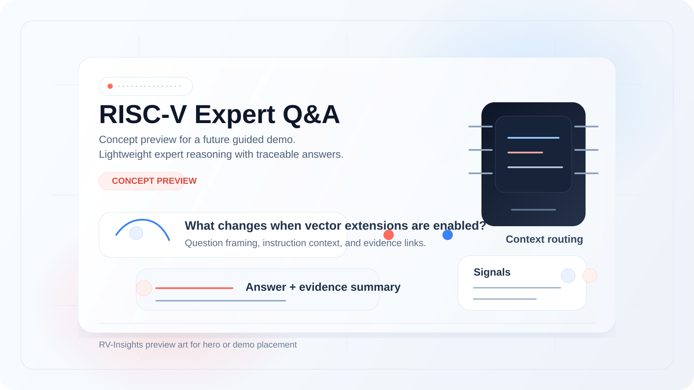
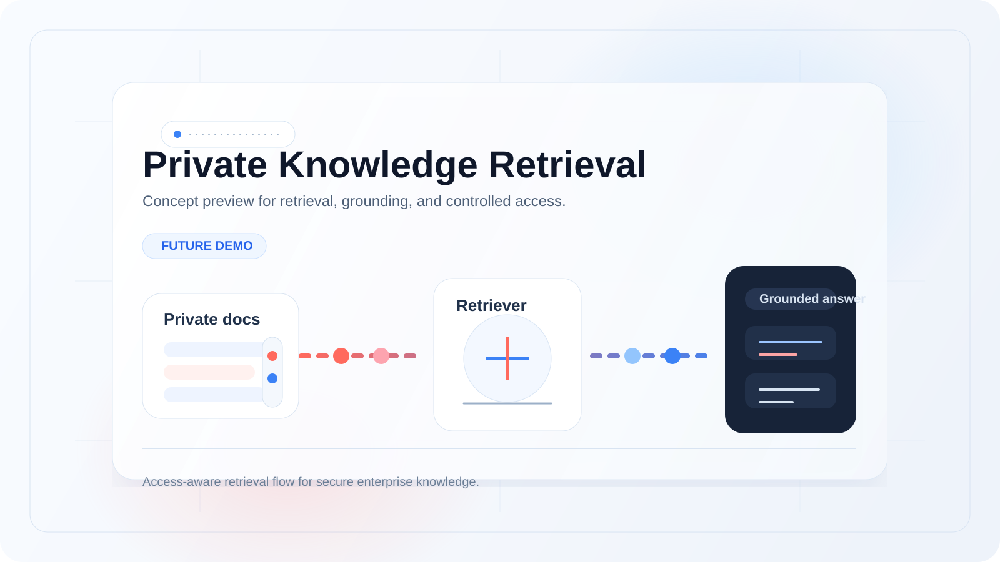
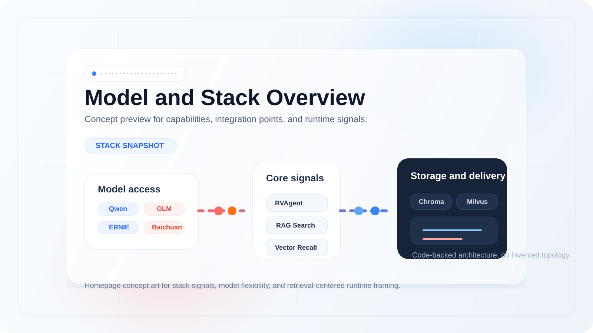
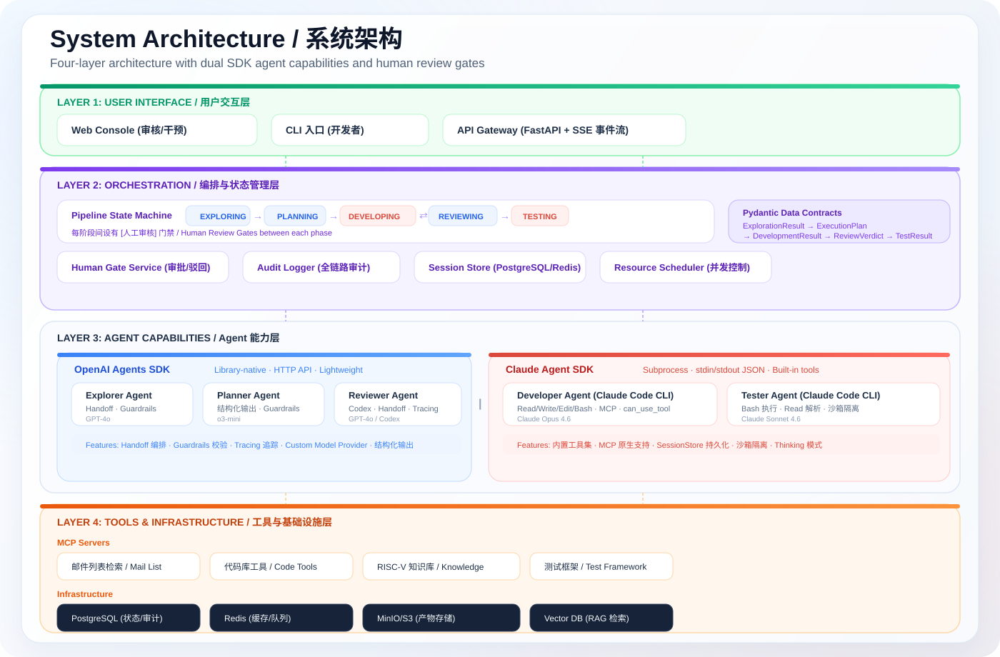
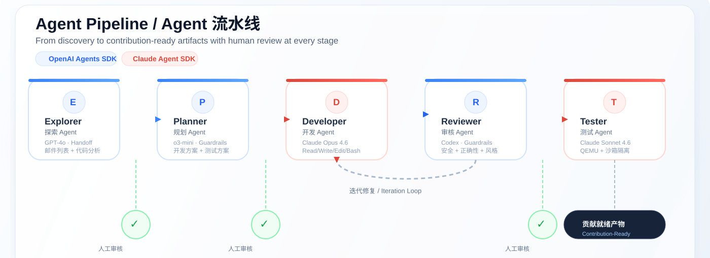
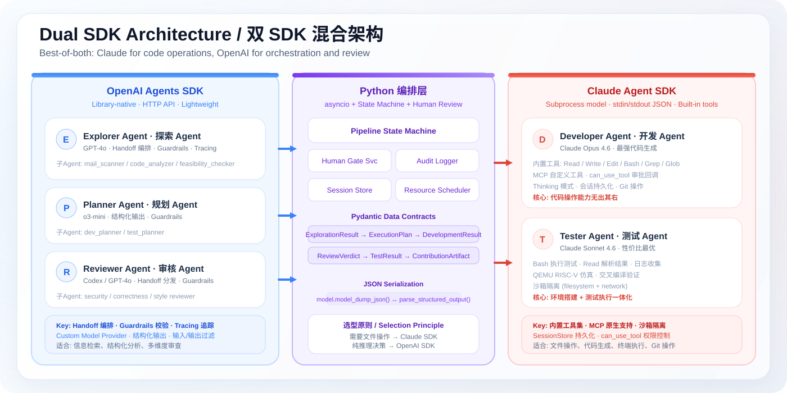
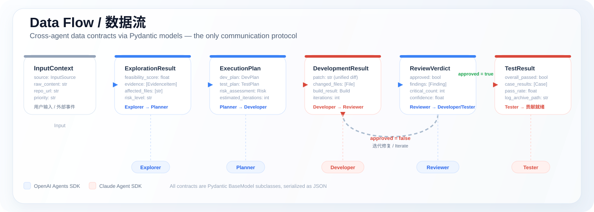

面向 RISC-V 开源贡献的多 Agent 平台 A Multi-Agent Platform for RISC-V Open-Source Contributions
用 AI Agent 驱动 RISC-V 开源贡献 AI Agent-Driven RISC-V Open-Source Contributions
编排五个专业化 Agent 节点——探索、规划、开发、审核、测试——形成从"发现贡献机会"到"输出可验证补丁"的完整闭环。采用 Claude Agent SDK + OpenAI Agents SDK 双架构，每阶段设有人工审核门禁。 Orchestrates five specialized agents — Explorer, Planner, Developer, Reviewer, Tester — forming a complete pipeline from discovering contribution opportunities to producing verified patches. Powered by Claude Agent SDK + OpenAI Agents SDK with human review gates at every stage.
- 5-Agent Pipeline
- Human-in-the-Loop
- Dual SDK Architecture
- Claude + OpenAI
- RISC-V Domain RAG


核心优势 Core advantages
为什么选择 RV-Insights Why RV-Insights
5-Agent Pipeline
Human-in-the-Loop
Dual SDK (Claude + OpenAI)
Evidence-First
RISC-V Domain RAG
Auditable Workflow
01
多 Agent 流水线 Multi-Agent Pipeline
五个专业化 Agent（探索、规划、开发、审核、测试）形成完整的贡献闭环，从发现机会到输出可验证补丁。 Five specialized agents (Explorer, Planner, Developer, Reviewer, Tester) form a complete contribution pipeline from opportunity discovery to verified patches.
02
人工审核门禁 Human Review Gates
每个阶段完成后必须暂停等待人工审批，高风险操作绝不自动执行。支持驳回、回流和修改意见。 Every phase pauses for human approval before proceeding. High-risk operations are never automated. Supports rejection, rollback, and modification feedback.
03
双 SDK 混合架构 Dual SDK Hybrid
Claude Agent SDK 负责代码操作（开发/测试），OpenAI Agents SDK 负责编排与审核。各取所长，不是折中。 Claude Agent SDK handles code operations (dev/test), OpenAI Agents SDK handles orchestration and review. Best-of-both, not a compromise.
04
领域知识增强 Domain Knowledge
RISC-V ISA 规范、内核文档、邮件列表归档通过 RAG 知识库增强 Agent 的领域理解能力。 RISC-V ISA specs, kernel docs, and mailing list archives enhance agent domain understanding through a RAG knowledge base.
四层系统架构 Four-layer system architecture
用户交互、编排、Agent 能力、工具基础设施 User interface, orchestration, agent capabilities, and tools infrastructure
编排层通过 Python asyncio 状态机驱动五阶段流水线，Agent 能力层分为 OpenAI Agents SDK（探索/规划/审核）和 Claude Agent SDK（开发/测试）两侧。 The orchestration layer drives a five-phase pipeline via Python asyncio state machine. The agent layer splits into OpenAI Agents SDK (explore/plan/review) and Claude Agent SDK (develop/test).

五阶段 Agent 流水线 Five-stage agent pipeline
从发现贡献机会到输出可验证补丁 From discovering opportunities to producing verified patches

Explorer + Planner
探索 Agent 通过 Handoff 编排子 Agent（邮件列表爬取、代码分析、可行性验证），规划 Agent 输出结构化开发方案和测试方案。 Explorer orchestrates sub-agents via Handoff (mail scanning, code analysis, feasibility check). Planner outputs structured dev and test plans.
Developer (Claude Code)
使用 Claude Opus 4.6 的内置工具集（Read/Write/Edit/Bash/Grep）进行代码开发，通过 can_use_tool 回调实现细粒度操作审批。 Uses Claude Opus 4.6 built-in tools (Read/Write/Edit/Bash/Grep) for code development, with fine-grained operation approval via can_use_tool callback.
Reviewer (Codex)
审核 Agent 通过 Handoff 分发给安全、正确性、风格三个专业审核子 Agent，汇总后做出通过/驳回判定。 Reviewer distributes via Handoff to security, correctness, and style sub-agents, then aggregates findings into an approve/reject verdict.
Tester (QEMU)
测试 Agent 在沙箱中搭建 QEMU RISC-V 仿真环境，执行交叉编译、启动测试和集成测试。 Tester sets up QEMU RISC-V emulation in a sandbox, running cross-compilation, boot tests, and integration tests.
双 SDK 混合架构 Dual SDK hybrid architecture
Claude 负责代码操作，OpenAI 负责编排与审核 Claude for code operations, OpenAI for orchestration and review
需要操作文件系统和执行代码的 Agent 用 Claude Agent SDK，纯推理和结构化决策的 Agent 用 OpenAI Agents SDK。这不是折中，而是各取所长。 Agents that need file system access and code execution use Claude Agent SDK. Pure reasoning and structured decision agents use OpenAI Agents SDK. Best-of-both, not a compromise.

OpenAI Agents SDK
库原生模型，Python 进程内直接调用 API。Handoff 编排多 Agent 协作，Guardrails 校验输入输出，内置 Tracing 追踪系统。适合信息检索、结构化分析、多维度审查。 Library-native model, direct API calls within Python process. Handoff for multi-agent orchestration, Guardrails for I/O validation, built-in Tracing. Ideal for information retrieval, structured analysis, and multi-dimensional review.
Claude Agent SDK
子进程模型，通过 stdin/stdout JSON 协议与 Claude Code CLI 通信。内置完整工具集（Read/Write/Edit/Bash/Grep/Glob），MCP 原生支持，沙箱隔离。适合文件操作、代码生成、终端执行。 Subprocess model, communicating with Claude Code CLI via stdin/stdout JSON. Complete built-in toolset (Read/Write/Edit/Bash/Grep/Glob), native MCP support, sandbox isolation. Ideal for file operations, code generation, and terminal execution.
能力拆解 Capability map
平台的六大核心能力 Six core platform capabilities
邮件列表监控Mailing List Monitoring
自动扫描 linux-riscv、qemu-devel 等邮件列表，识别未解决的 bug 报告、功能请求和架构适配讨论。Automatically scans linux-riscv, qemu-devel mailing lists to identify unresolved bugs, feature requests, and architecture adaptation discussions.
代码库分析Codebase Analysis
分析 RISC-V 架构代码中的 TODO/FIXME 注释、与 ARM/x86 的实现差距、缺失的测试覆盖和编译警告。Analyzes RISC-V architecture code for TODO/FIXME comments, gaps vs ARM/x86 implementations, missing test coverage, and compiler warnings.
自动化开发Automated Development
Claude Code 的内置工具集提供完整的代码操作能力——文件读写、代码编辑、终端执行、Git 操作一体化。Claude Code's built-in toolset provides complete code operation capabilities — file I/O, code editing, terminal execution, and Git operations in one.
多维度审核Multi-Dimensional Review
安全审查（缓冲区溢出、权限提升）、正确性审查（ISA 规范符合性）、风格审查（编码规范）三维并行。Security review (buffer overflow, privilege escalation), correctness review (ISA compliance), and style review (coding standards) in parallel.
QEMU 交叉验证QEMU Cross-Verification
在沙箱中搭建 QEMU RISC-V 仿真环境，执行交叉编译验证、启动测试和集成测试，确保补丁可靠。Sets up QEMU RISC-V emulation in a sandbox for cross-compilation verification, boot tests, and integration tests to ensure patch reliability.
知识库检索Knowledge Base Retrieval
RISC-V ISA 规范、内核文档、邮件列表归档通过 RAG 管道（Chroma/Milvus 向量库）增强 Agent 理解。RISC-V ISA specs, kernel docs, and mailing list archives enhance agent understanding through a RAG pipeline (Chroma/Milvus vector stores).
对比分析Comparison
与现有工具的对比How RV-Insights compares
| 维度Dimension | SWE-Agent | Aider | OpenDevin | RV-Insights |
|---|---|---|---|---|
| 定位Focus | 通用 SWEGeneral SWE | 结对编程Pair programming | 通用 AI 开发General AI dev | RISC-V 领域贡献RISC-V domain |
| Agent | 单 AgentSingle | 单 AgentSingle | 多 AgentMulti | 5 Agent + 人工门禁5 agents + human gates |
| 模型Models | 单模型Single | 单模型Single | 单模型Single | 双 SDK 混合Dual SDK hybrid |
| 人工介入Human review | 无None | 实时交互Real-time | 有限Limited | 每阶段强制审核Mandatory per-phase |
| 领域知识Domain knowledge | 无None | 无None | 无None | RAG 知识库RAG knowledge base |
| 测试验证Testing | 运行已有测试Existing tests | 无None | 运行已有测试Existing tests | 专用 Agent + QEMUDedicated + QEMU |
Quick Start
快速开始Get started in minutes
01
获取代码Clone the repo
从 GitHub 拉取 RV-Insights 仓库。Pull the repository from GitHub.
02
安装依赖Install dependencies
安装 Python 依赖，包括 Claude Agent SDK 和 OpenAI Agents SDK。Install Python dependencies including both SDKs.
03
配置并运行Configure and run
配置 API 密钥，启动平台。Set up API keys and launch the platform.
bashGitHub
git clone https://github.com/zcxGGmu/RV-Insights.git
cd RV-Insights
python -m pip install -r requirements.txt
# Configure API keys
cp .env.example .env
# Edit .env with your ANTHROPIC_API_KEY and OPENAI_API_KEY
# Run the platform
python -m rv_insights --help数据流Data flow
跨 Agent 数据契约Cross-agent data contracts
所有 Agent 之间通过 Pydantic 模型的 JSON 序列化形式传递数据，无需额外协议。All inter-agent communication uses JSON-serialized Pydantic models as the sole data contract.
